What I keep returning to, and the books that shape how I think about it.
The questions I am working on now and where they lead — written out a little more fully than a list of topics would allow.
Focus
Placeholder for the field you care about. Write two or three paragraphs here in your own voice — what the problem is, why it matters to you, and the specific corner of it you want to work on.
A second paragraph can narrow from the big picture to the concrete question you keep circling back to.
Messy Desk
Bookshelf
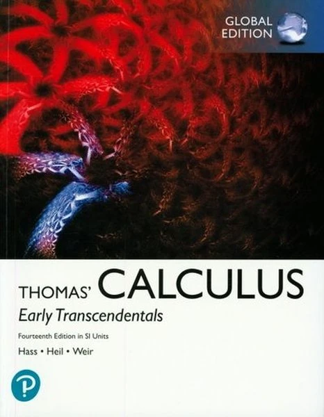
Calculus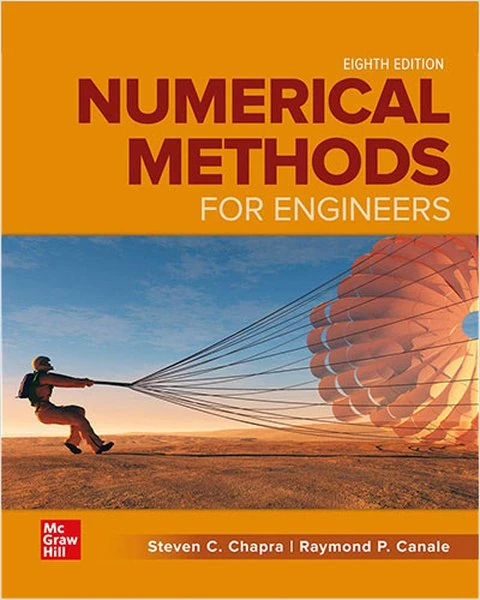
Numerical Methods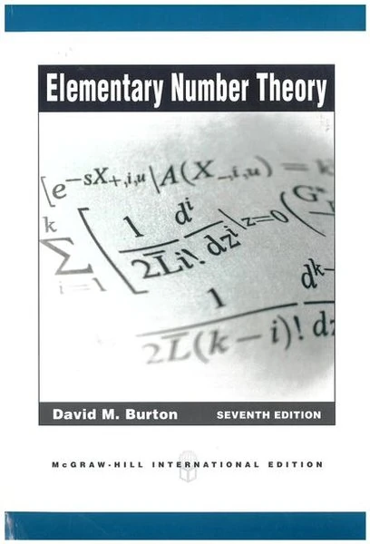
Number Theory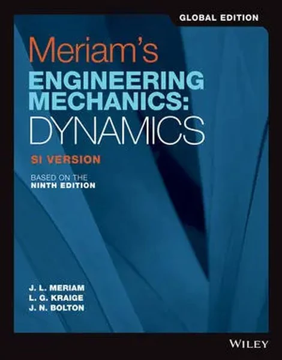
Dynamics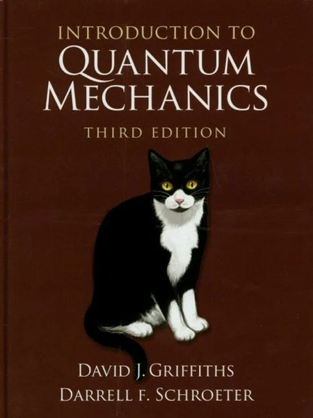
Quantum Mechanics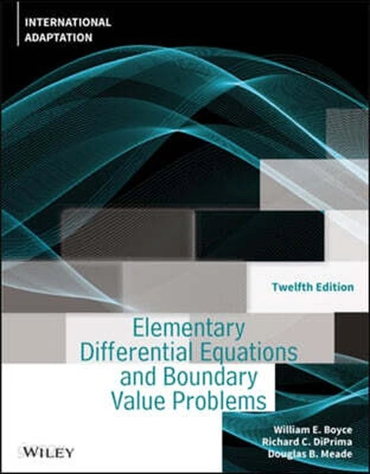
Differential Equations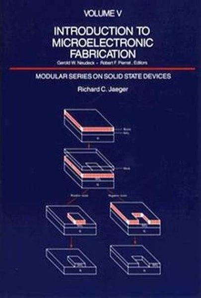
Microfabrication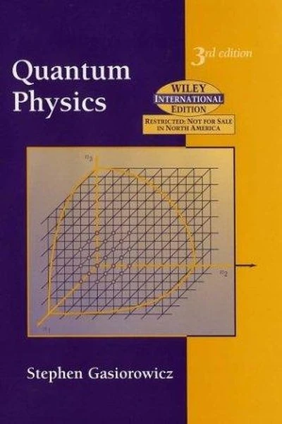
Quantum Physics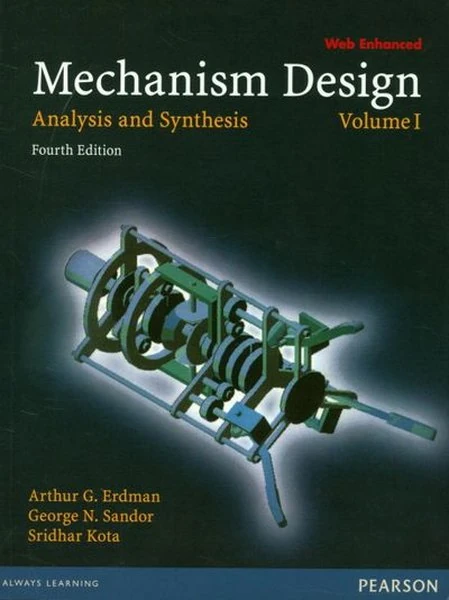
Mechanism Design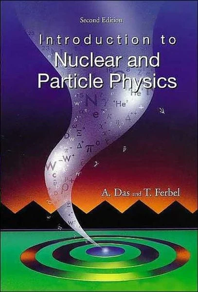
Nuclear & Particle Physics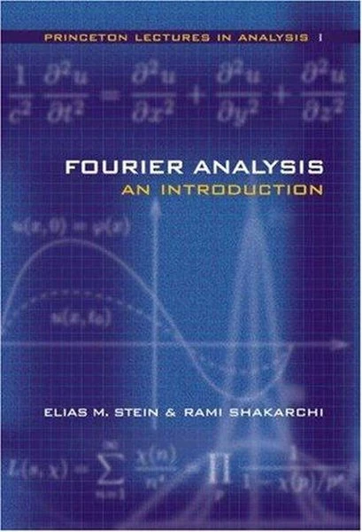
Fourier Analysis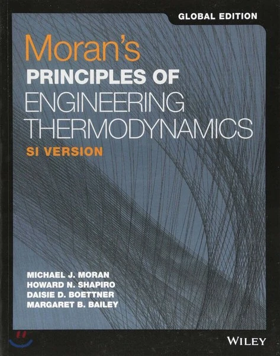
Thermodynamics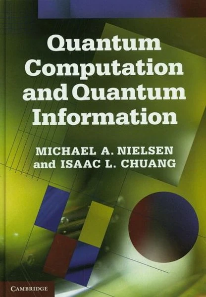
Quantum Information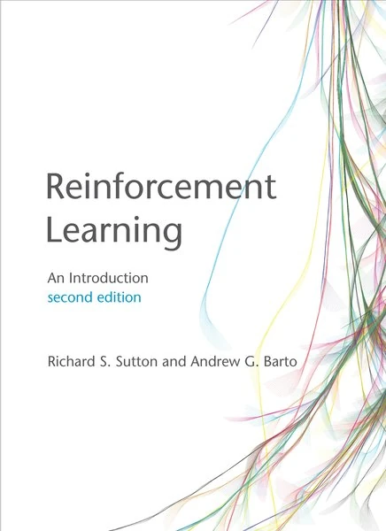
Reinforcement Learning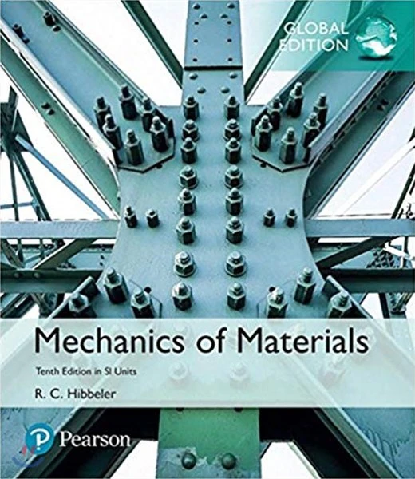
Mechanics of Materials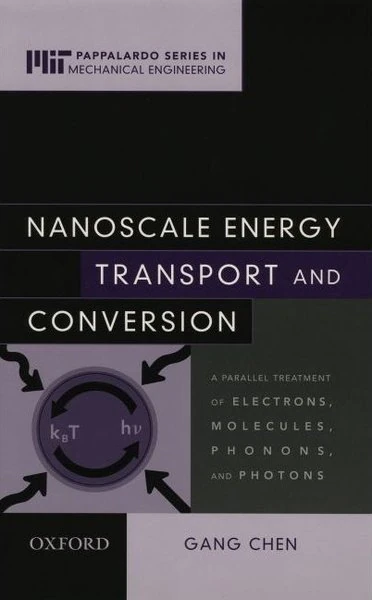
Nanoscale Energy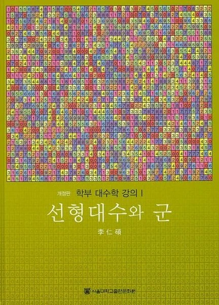
Linear Algebra & Group Theory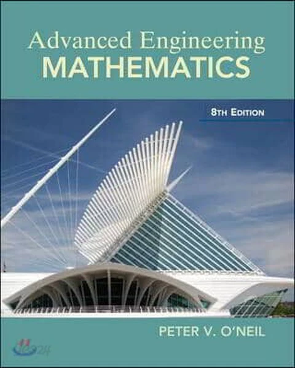
Engineering Mathematics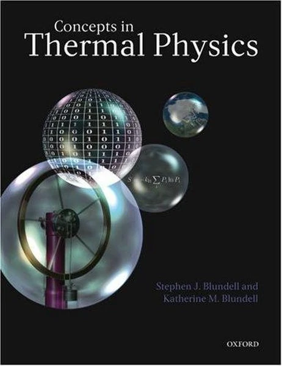
Thermal Physics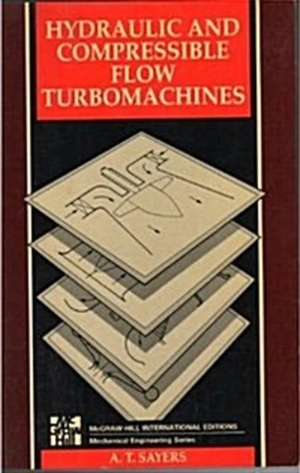
Turbomachinery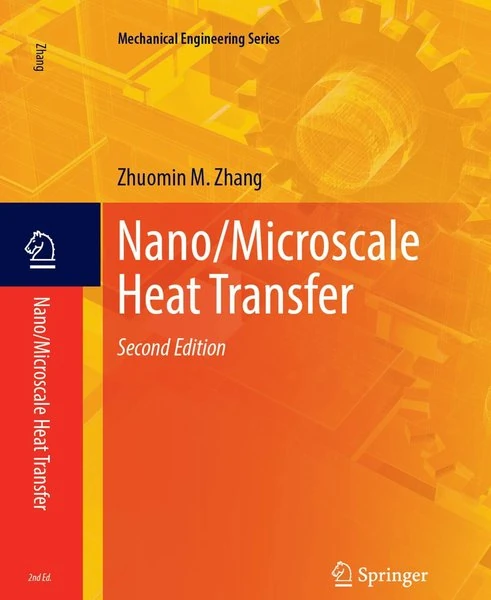
Micro/Nanoscale Heat Transfer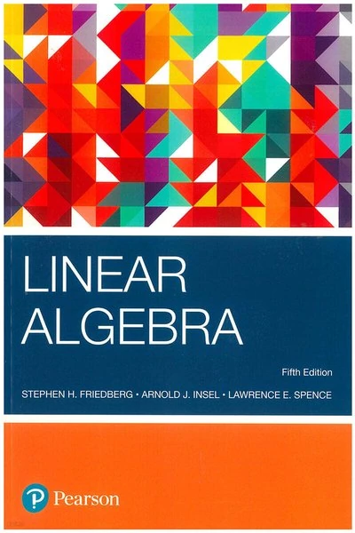
Linear Algebra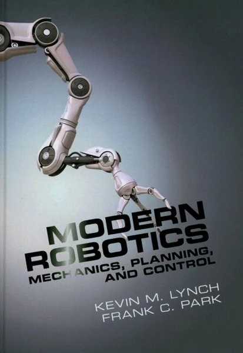
Robotics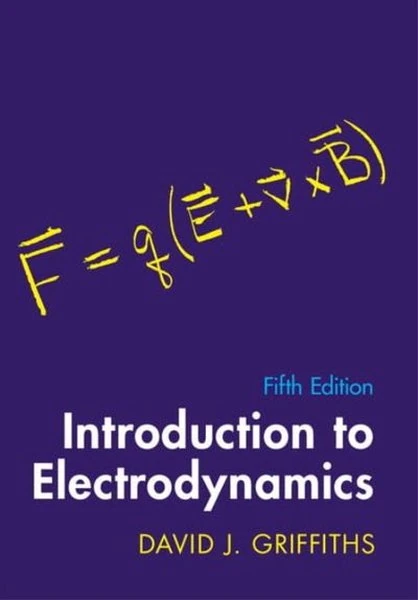
Electrodynamics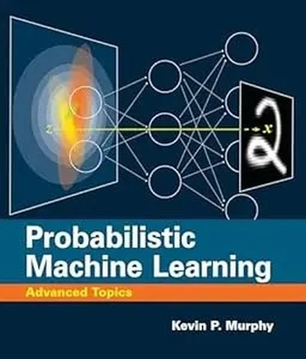
Machine Learning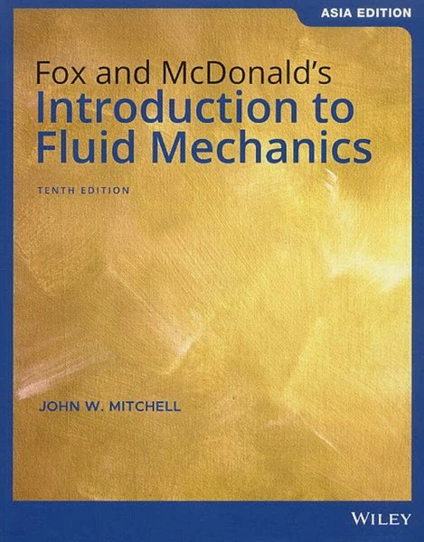
Fluid Mechanics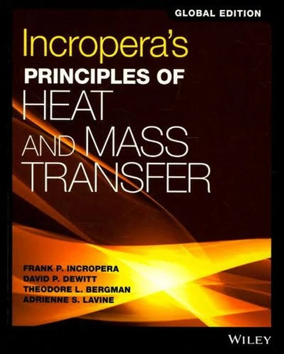
Heat Transfer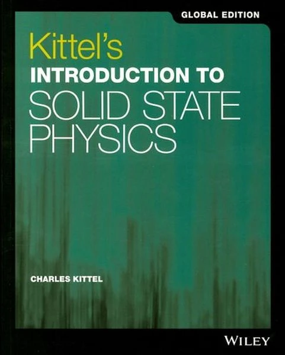
Solid State Physics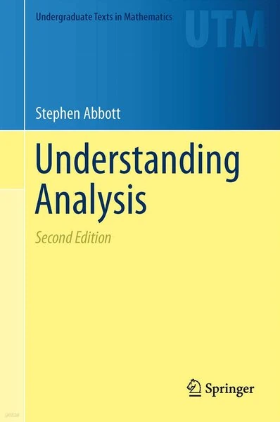
Real Analysis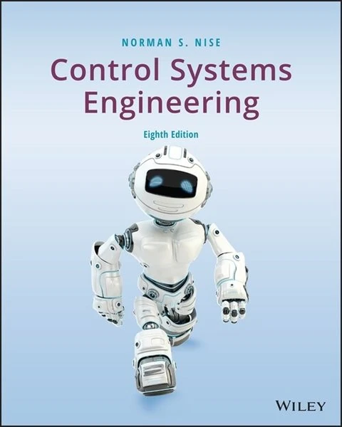
Control Engineering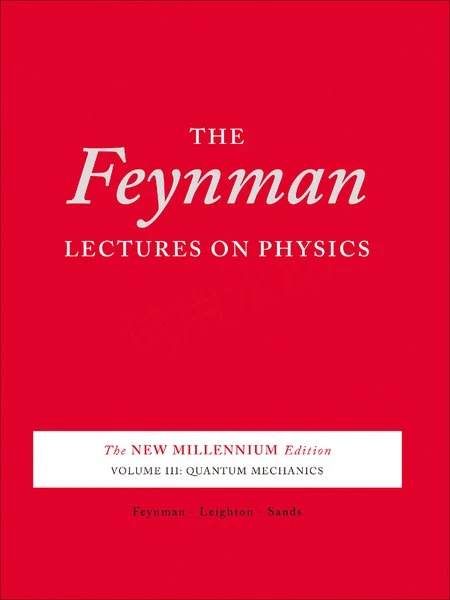
General PhysicsCover images come from material released by each publisher; copyright remains with the publishers.